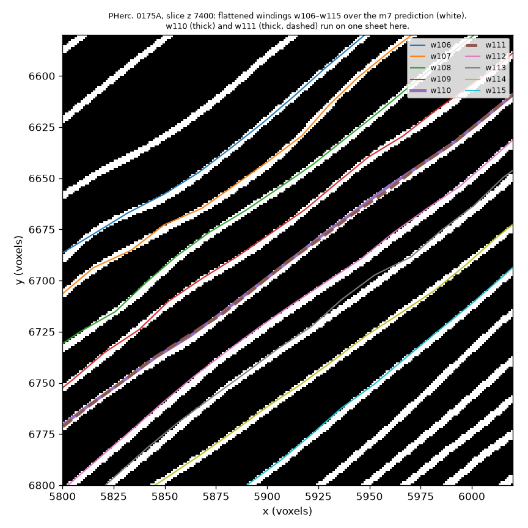
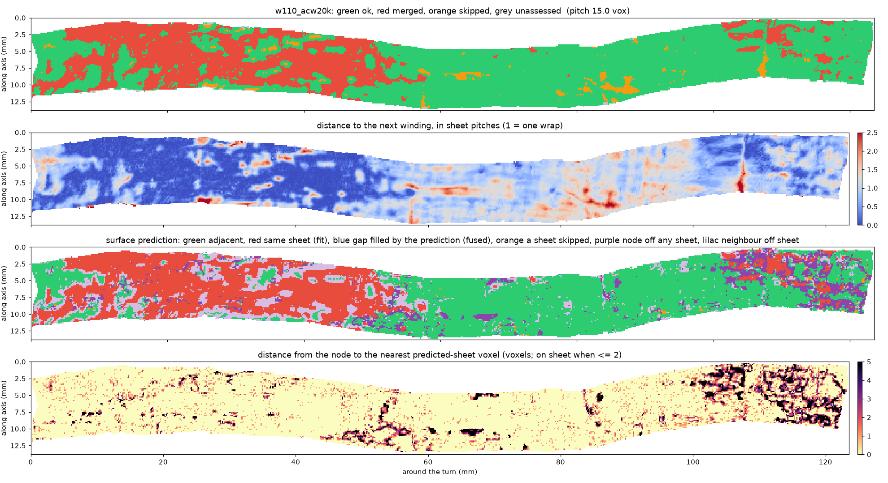
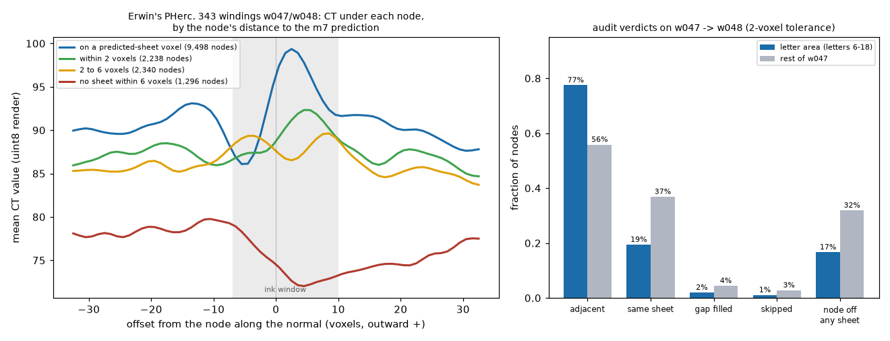
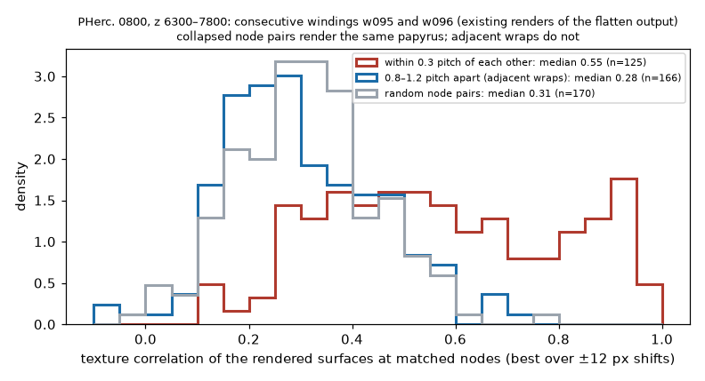
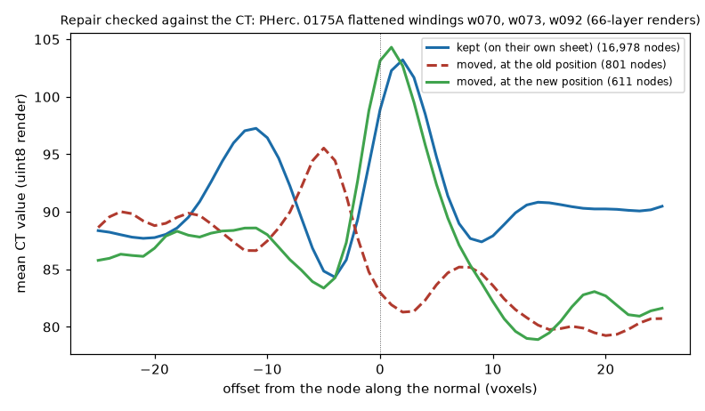
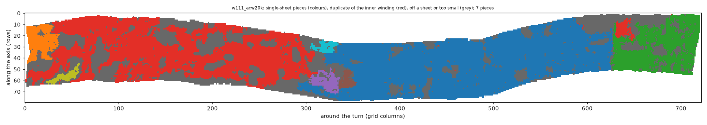
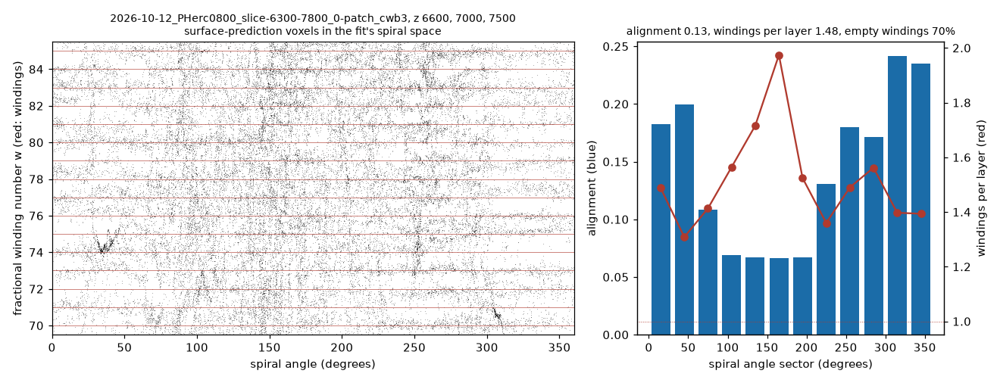

Auditing and correcting spiral-fit windings of Herculaneum scrolls against the surface prediction and the CT
fit_spiral, a nearest-sheet snap
onto the m7 surface prediction, lasagna flattening) is now the standard way to search the remaining scrolls, and its
windings are accepted by eye. We measure them per node. On four bands of three scrolls (PHerc. 0175A, 0813, 0800;
120 windings each), 17–24 % of the flattened nodes lie within 0.3 sheet pitch of the next winding, and
15–34 % lie on no predicted sheet. Two independent CT checks confirm it: node pairs that the audit puts on one
sheet render the same papyrus texture (correlation 0.55 against 0.28 for adjacent wraps), and the CT's own sheet
period equals the prediction's. Counting along radial rays, the fits place 1.2–1.6 windings on each sheet:
fit_spiral's spiral pitch stays near its starting value of 16 voxels while the sheets are 22–29 voxels
apart radially, and the snap then pairs windings on shared sheets. The winning PHerc. 343 pair shows the same on
21 % of a winding, mostly outside its letters. We release CPU tools that measure this before any rendering
(density, audit), repair what a re-snap can repair (repair, checked against the CT),
and mask the single-sheet surface that is read once (pieces).
The same 1.5 windings per sheet appears in the fit's own spiral space, where the sheets' winding phase is nearly
unrelated to the windings (alignment 0.11–0.15); we add this check to villa's spiral-fitting tools. A re-snap
cannot fix extra windings; the fit must start from the roll's own pitch and be checked before rendering.
A scroll is a rolled sheet. Virtual unwrapping must produce, for every wrap, a surface that stays on that wrap's papyrus all the way round, and no surface that runs on a neighbour's papyrus. The Vesuvius Challenge lists sheet switches and mergers among its main bottlenecks, and its judging criteria for unwrapping ask that output surfaces "don't jump across sheets in cross-section".
Since the PHerc. 343 award in October 2026, several groups fit a global spiral to a scroll band with villa's
fit_spiral, export one surface per winding, snap each node along its normal to the nearest sheet of the
published m7 surface prediction within ±15 voxels, flatten with lasagna, render and run ink detection. Each step
is checked by eye on a few windings. Nothing checks that winding k and winding k+1 lie on different sheets
everywhere, or how many sheets a fit has per winding. This work measures both, explains the failure, and gives tools that
find it before GPU time is spent on rendering and ink.
Terminology: "sheet" here means one turn's papyrus as the surface prediction marks it. Villa's SCROLL_ANATOMY.md calls that the papyrus of a winding and reserves "sheet" for a manufactured kollema; the villa tool therefore says "layer".
| scroll / band | scan | windings | stages audited | CT used |
|---|---|---|---|---|
| PHerc. 0175A, z 6900–7900 | 8.64 µm, 116 keV | w010–w129 | fit, snap, flatten, repair | 66-layer renders of w070, w073, w092 |
| PHerc. 0813, z 12200–13200 | 9.36 µm | w010–w129 | fit, snap, flatten | – |
| PHerc. 0800, z 5300–6300 | 8.64 µm | w010–w129 | fit, snap, flatten | cached CT chunks (3 windings) |
| PHerc. 0800, z 6300–7800 | 8.64 µm | w010–w129 | fit, snap | 22-layer renders of w095–w097; cached CT (3 windings) |
| PHerc. 343 (control) | 8.64 µm | w047, w048 (released by E. Nieuwlaar) | flatten | 66-layer render of the letter image's mesh |
All fits use villa fit_spiral at commit 0fb38c45 with 20k steps and the snap of the
PHerc. 343 recipe; the surface prediction is the published m7 store of each volume (level 0, threshold 128).
Windings are tifxyz grids with a 20-voxel node spacing.
For each node of winding k, the nearest node of winding k+1 at a similar angle around the turn is found with a KD-tree that carries the angular position as a fourth coordinate, so the spiral seam (where the end of one winding meets the start of the next on the same sheet) is not read as a merger. The node is then projected onto the tangent plane of k+1 at that node. Measuring to the nearest node instead misses windings that lie on top of each other, because on a 20-voxel grid the nearest node can be 10 or more voxels to the side. Against exact point-to-triangle distances to the neighbouring mesh the plane distance agrees within one voxel for about 90 % of nodes.
The pitch that the thresholds refer to is the median spacing of consecutive predicted-sheet runs along the node normals of 2,000 sampled nodes per winding. Unlike a pair's own median spacing it cannot shrink when two windings share a sheet (on one PHerc. 0175A pair the own median fell to 1.4 voxels against a prediction pitch of 15.5).
A node is on a sheet when a predicted-sheet voxel lies within 2 voxels (exact distance). With both ends of the node-to-neighbour segment on a sheet, the number of sheet runs along the segment gives the verdict: two runs, adjacent wraps; one run with the neighbour closer than half a pitch, the same sheet (a fit error); one run about a pitch away, the prediction fills the gap (a model error); three or more, a skipped wrap.
In one z-slice, 180 rays are cast from the centre of the innermost winding's outline. Along each ray the crossings of every winding (its slice outline) and of every predicted sheet (runs closer than 4 voxels joined) are counted between the crossings of w040 and w115. The ratio of winding steps to sheet steps is 1 for a fit with one winding per sheet. Unlike spacing measured in radius, the count does not depend on the angle between the rays and the sheets.
Repair is a snap bounded by the neighbours: along the normal, oriented from winding k−1 to k+1, a node off any sheet, or on a neighbour's sheet closer than half a pitch, moves to the nearest sheet run strictly between the two neighbours' runs (at most 1.25 pitches); a move larger than 0.4 pitch must agree with two neighbouring moves. Pieces joins the on-sheet nodes of a winding across grid edges that stay on one sheet (normal step under 0.35 pitch, quarter points on a sheet), cuts at the edge of shared-sheet regions, and drops, from the inside out, the nodes that duplicate the inner neighbour's kept surface. The result is a mask per winding.
The CT is read from existing renders (layer k lies k−32.5 voxels along the outward normal) and from cached level-0 chunks, never re-downloaded. Three checks are used: mean depth profiles of nodes grouped by their distance to the prediction; the CT's own sheet period along node normals (spectral peak and first autocorrelation peak); and the texture correlation between the rendered surfaces of two consecutive windings at matched nodes.
On all three scrolls a large share of each flattened band lies on a neighbour's sheet or on no sheet. The overlap is partial: on PHerc. 0175A, 44 of 119 pairs share a sheet on a quarter or more of their nodes, 21 on half or more and 6 on 70 % or more; on PHerc. 0800, 55, 2 and 0.


Off-sheet nodes are gaps. On the PHerc. 343 control, nodes on a predicted-sheet voxel have a sharp papyrus peak 2.5 voxels outward, inside the ink window; nodes with no predicted sheet within 6 voxels sit in a CT trough about 20 grey levels darker (Figure 3).
Shared sheets are the same papyrus. On two consecutive PHerc. 0800 windings (w095, w096; Figure 4), the rendered surface patches at matched nodes correlate at a median of 0.55 where the audit puts the windings within 0.3 pitch, against 0.28 for adjacent wraps and 0.31 for random pairs (w096/w097: 0.60).
The prediction does not miss sheets. The CT's sheet period along node normals is 15–17 voxels on three PHerc. 0175A windings and 17.1–17.7 on six PHerc. 0800 windings, equal to the prediction's run spacing on the same lines (14–15 and 16.2–17.5), while the fitted windings there are 9.5–13 voxels apart.


Every fit advances 17–19 voxels of radius per winding, whatever the scroll, while the sheets are 22–29
voxels apart along the same rays. fit_spiral learns its spiral pitch from model_initial_dr_per_winding
(default 16); in the PHerc. 0800 z 6300–7800 checkpoint it ended at 16.8, and in a 190-winding refit of PHerc.
0175A it read 15.6 after 3,000 iterations. Before the snap the windings do not touch (2.4 % of PHerc. 0175A nodes
within 0.3 pitch), but they are 0.6–0.7 of a sheet pitch apart; the nearest-sheet snap then puts pairs of windings
on one sheet over part of the turn (21 %) and leaves others to switch sheets around it. Raising the outer winding
index only extends how far the fit reaches at the same pitch (the outer-shell loss is off in these configurations).
The neighbour-bounded repair moves 3.1 % of the PHerc. 0175A nodes. On the three rendered windings the 811 moved nodes go from a mean CT of 83 at their old position (the gap) to 104 at the new one (nodes already on their sheet: 99; Figure 5). Nodes off any sheet drop from 15.2 % to 12.7 %. Windings that share a sheet stay: with both neighbours on the sheets around it, a winding has no free sheet to move to.

The mask keeps papyrus (mean CT 99 at kept nodes) and drops gaps (90) and second copies (114). On the PHerc. 343 control, 15 of the 18 letter centres lie in a kept piece (one through w047's copy of the same papyrus) and the other three keep 40–64 % of their surroundings.

The audit, the density count and the CT checks all point at the fit, not the snap or the prediction. Three things follow.
A fit is a transform from scan space to a spiral space in which winding k is the curve r = dr (k + φ/2π). Mapping the prediction's sheet voxels of a few slices through the checkpoint gives each voxel a fractional winding number w, and a correct fit puts every sheet on a whole w. The check reports, overall and per 30° sector, the phase alignment of the sheets (mean resultant length of e2πiw; 1 = all on windings), the median number of windings between consecutive sheets at one angle, and the share of winding cells with no sheet nearby. It reads only the checkpoint and the prediction and runs on CPU in seconds per slice.
| fit (w040–w115) | slice | windings per sheet | alignment | empty winding cells |
|---|---|---|---|---|
| PHerc. 0800 z 6300–7800, 20k steps | z 6600 | 1.53 | 0.14 | 73 % |
| z 7000 | 1.52 | 0.15 | 71 % | |
| z 7500 | 1.54 | 0.11 | 74 % | |
| PHerc. 0175A z 5900–6900, 190 windings, iteration 6,000 | z 6200, 6600 | 1.42–1.44 | 0.02–0.05 | 74–75 % |
| same fit, new outer windings w130–w185 | z 6200, 6600 | 1.17–1.18 | 0.01–0.02 | 81–82 % |
Table 4. Spiral-space check of two fits. The PHerc. 0800 value agrees with the independent count along radial rays in the slice (1.52–1.54, Table 2).

A snap moves nodes onto existing sheets. A fit with 1.5 windings per sheet has half again as many windings as the roll has turns in that range, so after any snap a third of its windings must share a sheet with a neighbour or lie in a gap; the neighbour-bounded repair (Section 4.4) fixes the nodes that have a free sheet to go to, and the pieces mask (4.5) marks the rest. Raising the outer winding index does not help by itself: in these configurations the outer-shell loss is off, the index only extends how far the fit reaches, and the 190-winding refit, at iteration 6,000, still reads 1.4 inside and 1.2 for the new outer windings (Table 4).
fit_spiral moves its pitch little from the starting value
(16 → 16.8 voxels). The starting value should be the radial sheet spacing of the scroll, which the
density count gives directly (radius per winding × windings per sheet): about 25–29 voxels on PHerc. 0800,
25–26 on PHerc. 0175A and 22 on PHerc. 0813.Items 1 and 2 need GPU refits to confirm; this work ran on CPU only, so they are stated as the change the measurements call for, not as a demonstrated result.
density, audit, repair, pieces; tifxyz and OME-Zarr in, tifxyz,
CSV/JSON and figures out. github.com/TAUIL-Abd-Elilah/spiral-winding-auditspiral-fitting/check_fit_against_prediction.py with a regression test, on branch
tauil/spiral-sheet-reindex of the author's fork, proposed to ScrollPrize/villa.check_fit_against_prediction or density right after
the fit; audit after the snap and after flattening; repair before flattening;
pieces to choose what to render and read.pip install -e . winding-audit density <fit>/meshes/fitted_<tag> --surface <m7.zarr> --z 6600 7500 --first w040 --last w115 winding-audit audit <band> --surface <m7.zarr> --out runs/band --voxel-um 8.64 [--subdir tifxyz/flatten.tifxyz] winding-audit repair <band> --surface <m7.zarr> --out runs/band_repaired --audit --voxel-um 8.64 winding-audit pieces <band> --surface <m7.zarr> --out runs/band_pieces --voxel-um 8.64 --figures
All result tables are in docs/results/ of the repository; the test suite builds a synthetic
spiral scroll with injected mergers, skips, gaps and fused prediction and checks every verdict.
volume-cartographer/scripts/spiral (fit_spiral) and lasagna. github.com/ScrollPrize/villa